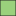
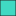
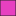
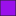
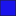
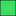

<!doctype html>
<html lang="en">
    <head>
      <!-- Las metaetiquetas, etiquetas meta o elementos meta (también conocidas por su nombre en inglés, metatags o meta tags) son etiquetas HTML que se incorporan en el encabezado de una página web y que resultan invisibles para un visitante normal, pero de gran utilidad para navegadores u otros programas que puedan valerse de esta información.
      Su propósito es el de incluir información (metadatos) de referencia sobre la página: autor, título,
      fecha, palabras clave, descripción, etc. -->
        <meta charset="utf-8">
        <meta http-equiv="X-UA-Compatible" content="IE=edge">
        <meta name="viewport" content="initial-scale=1,user-scalable=no,maximum-scale=1,width=device-width">
        <meta name="mobile-web-app-capable" content="yes">
        <meta name="apple-mobile-web-app-capable" content="yes">
        <link rel="stylesheet" href="css/leaflet.css"><link rel="stylesheet" href="css/L.Control.Locate.min.css">
        <link rel="stylesheet" href="css/qgis2web.css"><link rel="stylesheet" href="css/fontawesome-all.min.css">
        <link rel="stylesheet" href="css/leaflet-search.css">
        <link rel="stylesheet" href="css/leaflet-control-geocoder.Geocoder.css">
        <link rel="stylesheet" href="css/leaflet-measure.css">
        <style>
        #map {
            width: 1620px;
            height: 891px;
        }
        </style>
        <title></title>
    </head>
    <body>
        <div id="map">
        </div>
        <!-- los archivos js permite visualizar la informacion de manera interactiva -->
        <script src="js/qgis2web_expressions.js"></script>
        <script src="js/leaflet.js"></script><script src="js/L.Control.Locate.min.js"></script>
        <script src="js/leaflet.rotatedMarker.js"></script>
        <script src="js/leaflet.pattern.js"></script>
        <script src="js/leaflet-hash.js"></script>
        <script src="js/Autolinker.min.js"></script>
        <script src="js/rbush.min.js"></script>
        <script src="js/labelgun.min.js"></script>
        <script src="js/labels.js"></script>
        <script src="js/leaflet-control-geocoder.Geocoder.js"></script>
        <script src="js/leaflet-measure.js"></script>
        <script src="js/proj4.js"></script>
        <script src="js/proj4leaflet.js"></script>
        <script src="js/leaflet-search.js"></script>
        <script src="data/curvas_nivel50m_2.js"></script>
        <script src="data/forestal_laspua_3.js"></script>
        <script>
        var highlightLayer;
        <!-- determina el estilo de las capas  -->
        <!-- determina el estilo de las capas  -->
        function highlightFeature(e) {
            highlightLayer = e.target;

            if (e.target.feature.geometry.type === 'LineString') {
              highlightLayer.setStyle({
                color: '#ffff00',
              });
            } else {
              highlightLayer.setStyle({
                fillColor: '#ffff00',
                fillOpacity: 1
              });
            }
            highlightLayer.openPopup();
        }
        <!-- crear una variable con estas coordenadas  -->
        var crs = new L.Proj.CRS('EPSG:25830', '+proj=utm +zone=30 +ellps=GRS80 +towgs84=0,0,0,0,0,0,0 +units=m +no_defs', {
            resolutions: [2800, 1400, 700, 350, 175, 84, 42, 21, 11.2, 5.6, 2.8, 1.4, 0.7, 0.35, 0.14, 0.07],
        });
          <!-- que se visualice en la carpeta el zoom activo de un max de 28 y minimo de 1 -->
        var map = L.map('map', {
            crs: crs,
            continuousWorld: false,
            worldCopyJump: false,
            zoomControl:true, maxZoom:28, minZoom:1
        }).fitBounds([[42.46653490272938,0.10517003980503754],[42.552174179302426,0.3063599143771124]]);
        var hash = new L.Hash(map);
        map.attributionControl.setPrefix('<a href="https://github.com/tomchadwin/qgis2web" target="_blank">qgis2web</a> &middot; <a href="http://leafletjs.com" title="A JS library for interactive maps">Leaflet</a>');
        L.control.locate({locateOptions: {maxZoom: 19}}).addTo(map);
        <!-- establece los parametros de la herramienta de medición de distancias -->
        var measureControl = new L.Control.Measure({
            position: 'topleft',
            primaryLengthUnit: 'meters',
            secondaryLengthUnit: 'kilometers',
            primaryAreaUnit: 'sqmeters',
            secondaryAreaUnit: 'hectares'
        });
        measureControl.addTo(map);
        <!-- obtener los nombres de los diferentes elementos herramienta de buscar  clases -->
        document.getElementsByClassName('leaflet-control-measure-toggle')[0]
        .innerHTML = '';
        document.getElementsByClassName('leaflet-control-measure-toggle')[0]
        .className += ' fas fa-ruler';
        var bounds_group = new L.featureGroup([]);
        <!--   la funcion function setBounds es un método en Java que mueve y cambia el tamaño de un componente para caber dentro de los parámetros de un rectángulo delimitador -->
        function setBounds() {
        }
        var img_modelo_sombras_0 = 'data/modelo_sombras_0.png';
        var img_bounds_modelo_sombras_0 = [[42.4698616131895,0.13929504992058744],[42.54951705670053,0.26141223556857296]];
        var layer_modelo_sombras_0 = new L.imageOverlay(img_modelo_sombras_0, img_bounds_modelo_sombras_0);
        bounds_group.addLayer(layer_modelo_sombras_0);
        map.addLayer(layer_modelo_sombras_0);
        var img_mde_laspua_1 = 'data/mde_laspua_1.png';
        var img_bounds_mde_laspua_1 = [[42.4698616131895,0.13929504992058744],[42.54951705670053,0.26141223556857296]];
        var layer_mde_laspua_1 = new L.imageOverlay(img_mde_laspua_1, img_bounds_mde_laspua_1);
        bounds_group.addLayer(layer_mde_laspua_1);
        map.addLayer(layer_mde_laspua_1);
        function pop_curvas_nivel50m_2(feature, layer) {
            layer.on({
                mouseout: function(e) {
                    for (i in e.target._eventParents) {
                        e.target._eventParents[i].resetStyle(e.target);
                    }
                    if (typeof layer.closePopup == 'function') {
                        layer.closePopup();
                    } else {
                        layer.eachLayer(function(feature){
                            feature.closePopup()
                        });
                    }
                },
                mouseover: highlightFeature,
            });
            <!-- la herramienta popup content genera un cuadro de dialogos con la informacion deseada -->
            var popupContent = '<table>\
                    <tr>\
                        <td colspan="2">' + (feature.properties['ID'] !== null ? Autolinker.link(String(feature.properties['ID'])) : '') + '</td>\
                    </tr>\
                    <tr>\
                        <td colspan="2">' + (feature.properties['ELEV'] !== null ? Autolinker.link(String(feature.properties['ELEV'])) : '') + '</td>\
                    </tr>\
                </table>';
            layer.bindPopup(popupContent, {maxHeight: 400});
        }

        function style_curvas_nivel50m_2_0() {
            return {
                pane: 'pane_curvas_nivel50m_2',
                opacity: 1,
                color: 'rgba(227,26,28,0.6)',
                dashArray: '',
                lineCap: 'square',
                lineJoin: 'bevel',
                weight: 1.0,
                fillOpacity: 0,
            }
        }
        <!-- crea un panel con la siguiente capa-->
        map.createPane('pane_curvas_nivel50m_2');
        map.getPane('pane_curvas_nivel50m_2').style.zIndex = 402;
        map.getPane('pane_curvas_nivel50m_2').style['mix-blend-mode'] = 'normal';
        var layer_curvas_nivel50m_2 = new L.geoJson(json_curvas_nivel50m_2, {
            attribution: '',
            pane: 'pane_curvas_nivel50m_2',
            onEachFeature: pop_curvas_nivel50m_2,
            style: style_curvas_nivel50m_2_0,
        });
        <!-- añade un grupo de bandas-->
        bounds_group.addLayer(layer_curvas_nivel50m_2);
        map.addLayer(layer_curvas_nivel50m_2);
        function pop_forestal_laspua_3(feature, layer) {
            layer.on({
                mouseout: function(e) {
                    for (i in e.target._eventParents) {
                        e.target._eventParents[i].resetStyle(e.target);
                    }
                    if (typeof layer.closePopup == 'function') {
                        layer.closePopup();
                    } else {
                        layer.eachLayer(function(feature){
                            feature.closePopup()
                        });
                    }
                },
                mouseover: highlightFeature,
            });
            <!-- solo queremos representar estas visualizar el dato de estas dos varible la primera parte del codigo hace referencia al titulo y la segunda al dato, es decir encabezado y el dato-->
            var popupContent = '<table>\
                    <tr>\
                        <td colspan="2"><strong>area</strong><br />' + (feature.properties['area'] !== null ? Autolinker.link(String(feature.properties['area'])) : '') + '</td>\
                    </tr>\
                    <tr>\
                        <td colspan="2"><strong>tablas_i_1</strong><br />' + (feature.properties['tablas_i_1'] !== null ? Autolinker.link(String(feature.properties['tablas_i_1'])) : '') + '</td>\
                    </tr>\
                </table>';
            layer.bindPopup(popupContent, {maxHeight: 400});
        }
        <!-- aqui se modifican los etilos de los polignos en este caso son formaciones forestales-->
        function style_forestal_laspua_3_0(feature) {
            switch(String(feature.properties['tablas_i_1'])) {
                case 'Abies alba':
                    return {
                pane: 'pane_forestal_laspua_3',
                opacity: 1,
                color: 'rgba(35,35,35,0.7)',
                dashArray: '',
                lineCap: 'butt',   <!--property sets or returns the style of the end caps for a line -->
                lineJoin: 'miter', <!--property sets or returns the type of corner created, when two lines meet -->
                weight: 1.0,
                fill: true,
                fillOpacity: 1,
                fillColor: 'rgba(154,209,124,0.7)', <!--color de relleno -->
            }
                    break;
                case 'Buxus sempervirens':
                    return {
                pane: 'pane_forestal_laspua_3',
                opacity: 1,
                color: 'rgba(35,35,35,0.7)',
                dashArray: '',
                lineCap: 'butt',
                lineJoin: 'miter',
                weight: 1.0,
                fill: true,
                fillOpacity: 1,
                fillColor: 'rgba(232,130,52,0.7)',
            }
                    break;
                case 'Corylus avellana':
                    return {
                pane: 'pane_forestal_laspua_3',
                opacity: 1,
                color: 'rgba(35,35,35,0.7)',
                dashArray: '',
                lineCap: 'butt',
                lineJoin: 'miter',
                weight: 1.0,
                fill: true,
                fillOpacity: 1,
                fillColor: 'rgba(25,122,200,0.7)',
            }
                    break;
                case 'Fagus sylvatica':
                    return {
                pane: 'pane_forestal_laspua_3',
                opacity: 1,
                color: 'rgba(35,35,35,0.7)',
                dashArray: '',
                lineCap: 'butt',
                lineJoin: 'miter',
                weight: 1.0,
                fill: true,
                fillOpacity: 1,
                fillColor: 'rgba(64,217,194,0.7)',
            }
                    break;
                case 'Pinus nigra':
                    return {
                pane: 'pane_forestal_laspua_3',
                opacity: 1,
                color: 'rgba(35,35,35,0.7)',
                dashArray: '',
                lineCap: 'butt',
                lineJoin: 'miter',
                weight: 1.0,
                fill: true,
                fillOpacity: 1,
                fillColor: 'rgba(231,64,192,0.7)',
            }
                    break;
                case 'Pinus sylvestris':
                    return {
                pane: 'pane_forestal_laspua_3',
                opacity: 1,
                color: 'rgba(35,35,35,0.7)',
                dashArray: '',
                lineCap: 'butt',
                lineJoin: 'miter',
                weight: 1.0,
                fill: true,
                fillOpacity: 1,
                fillColor: 'rgba(236,239,135,0.7)',
            }
                    break;
                case 'Pinus uncinata':
                    return {
                pane: 'pane_forestal_laspua_3',
                opacity: 1,
                color: 'rgba(35,35,35,0.7)',
                dashArray: '',
                lineCap: 'butt',
                lineJoin: 'miter',
                weight: 1.0,
                fill: true,
                fillOpacity: 1,
                fillColor: 'rgba(155,16,235,0.7)',
            }
                    break;
                case 'Populus nigra':
                    return {
                pane: 'pane_forestal_laspua_3',
                opacity: 1,
                color: 'rgba(35,35,35,0.7)',
                dashArray: '',
                lineCap: 'butt',
                lineJoin: 'miter',
                weight: 1.0,
                fill: true,
                fillOpacity: 1,
                fillColor: 'rgba(27,20,236,0.7)',
            }
                    break;
                case 'Quercus faginea':
                    return {
                pane: 'pane_forestal_laspua_3',
                opacity: 1,
                color: 'rgba(35,35,35,0.7)',
                dashArray: '',
                lineCap: 'butt',
                lineJoin: 'miter',
                weight: 1.0,
                fill: true,
                fillOpacity: 1,
                fillColor: 'rgba(57,221,98,0.7)',
            }
                    break;
                case 'Quercus petraea':
                    return {
                pane: 'pane_forestal_laspua_3',
                opacity: 1,
                color: 'rgba(35,35,35,0.7)',
                dashArray: '',
                lineCap: 'butt',
                lineJoin: 'miter',
                weight: 1.0,
                fill: true,
                fillOpacity: 1,
                fillColor: 'rgba(208,60,85,0.7)',
            }
                    break;
            }
        }
        <!--crea el mapan con ese "panel"las siguiente lineas de codigo perfilan sus dimensiones su estilo -->
        map.createPane('pane_forestal_laspua_3');
        map.getPane('pane_forestal_laspua_3').style.zIndex = 403;
        map.getPane('pane_forestal_laspua_3').style['mix-blend-mode'] = 'normal';
        var layer_forestal_laspua_3 = new L.geoJson(json_forestal_laspua_3, {
            attribution: '',
            pane: 'pane_forestal_laspua_3',
            onEachFeature: pop_forestal_laspua_3,
            style: style_forestal_laspua_3_0,
        });

        bounds_group.addLayer(layer_forestal_laspua_3);
        map.addLayer(layer_forestal_laspua_3);
          <!--  la funcion Control.Geocode es un simple geocoder form to locate places -->
        var osmGeocoder = new L.Control.Geocoder({
            collapsed: true,
            position: 'topleft', <!--  localización el la web -->
            text: 'Search',
            title: 'Testing'
        }).addTo(map); <!--  añade al mapa los siguiente elementos -->
        document.getElementsByClassName('leaflet-control-geocoder-icon')[0]
        .className += ' fa fa-search';
        document.getElementsByClassName('leaflet-control-geocoder-icon')[0]
        .title += 'Search for a place';
        var baseMaps = {};
        <!--  control gives user the habilite to " switch" between different base layers and "switch" overlays on/off -->
        L.control.layers(baseMaps,{'forestal_laspuña<br /><table><tr><td style="text-align: center;"></td><td>Abies alba</td></tr><tr><td style="text-align: center;"></td><td>Buxus sempervirens</td></tr><tr><td style="text-align: center;"></td><td>Corylus avellana</td></tr><tr><td style="text-align: center;"></td><td>Fagus sylvatica</td></tr><tr><td style="text-align: center;"></td><td>Pinus nigra</td></tr><tr><td style="text-align: center;"></td><td>Pinus sylvestris</td></tr><tr><td style="text-align: center;"></td><td>Pinus uncinata</td></tr><tr><td style="text-align: center;"></td><td>Populus nigra</td></tr><tr><td style="text-align: center;"></td><td>Quercus faginea</td></tr><tr><td style="text-align: center;"></td><td>Quercus petraea</td></tr></table>': layer_forestal_laspua_3,' curvas_nivel50m': layer_curvas_nivel50m_2,"mde_laspuña": layer_mde_laspua_1,"modelo_sombras": layer_modelo_sombras_0,}).addTo(map);
        setBounds();
        <!--  añade un buscador personalizado de los valores del campo "tabla_i_1 " el cual hace referencia a las distintas especies forestales -->
        map.addControl(new L.Control.Search({
            layer: layer_forestal_laspua_3,
            initial: false,
            hideMarkerOnCollapse: true,
            propertyName: 'tablas_i_1'}));
        document.getElementsByClassName('search-button')[0].className +=
         ' fa fa-binoculars';   <!-- esto hace referencia al elemento de simula una prismaticos -->
         <!--text superposition over an image, "with" image or text change on mouse hover.-->
        L.ImageOverlay.include({
            getBounds: function () {
                return this._bounds;
            }
        });
      <!--  The <input type="reset"> defines a reset button which resets all form values to its initial "values. Tip": Avoid reset buttons "in" your forms! It is frustrating "for" users "if" they click them by mistake.-->
        resetLabels([layer_forestallaspuña_3]);
          <!-- aqui se decine tres funcions hacer zoom, añadir layer y quitar layer con la funcion "reset label" en cada uno de ellas, esdecir que adjunte las etiquetas, ademas  la funcion "map. on" consigue esablecer una relacion interactiva entre los diferentes elementos y la información deseada -->
        map.on("zoomend", function(){
            resetLabels([layer_forestallaspuña_3]);
        });
        map.on("layeradd", function(){
            resetLabels([layer_forestallaspuña_3]);
        });
        map.on("layerremove", function(){
            resetLabels([layer_forestallaspuña_3]);
        });
        </script>
    </body>
</html>
